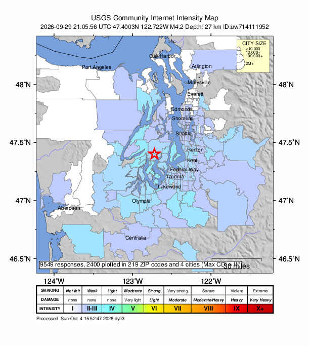
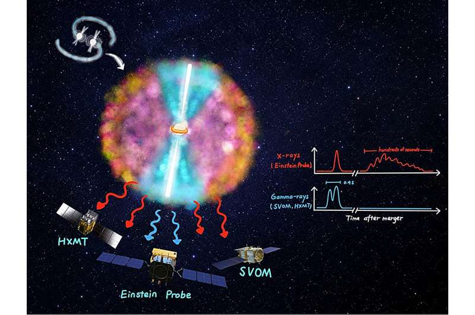
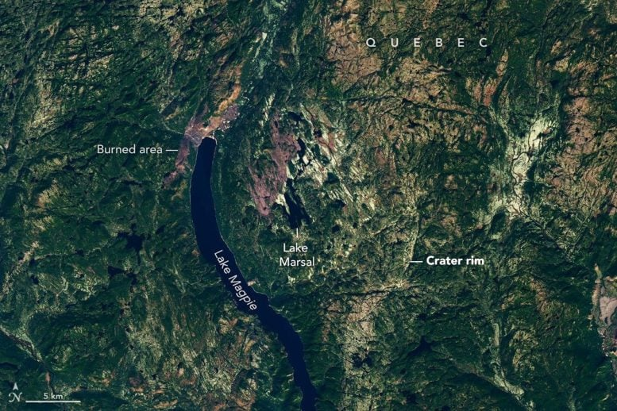
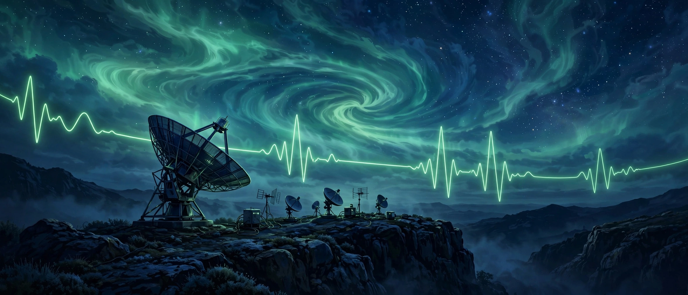
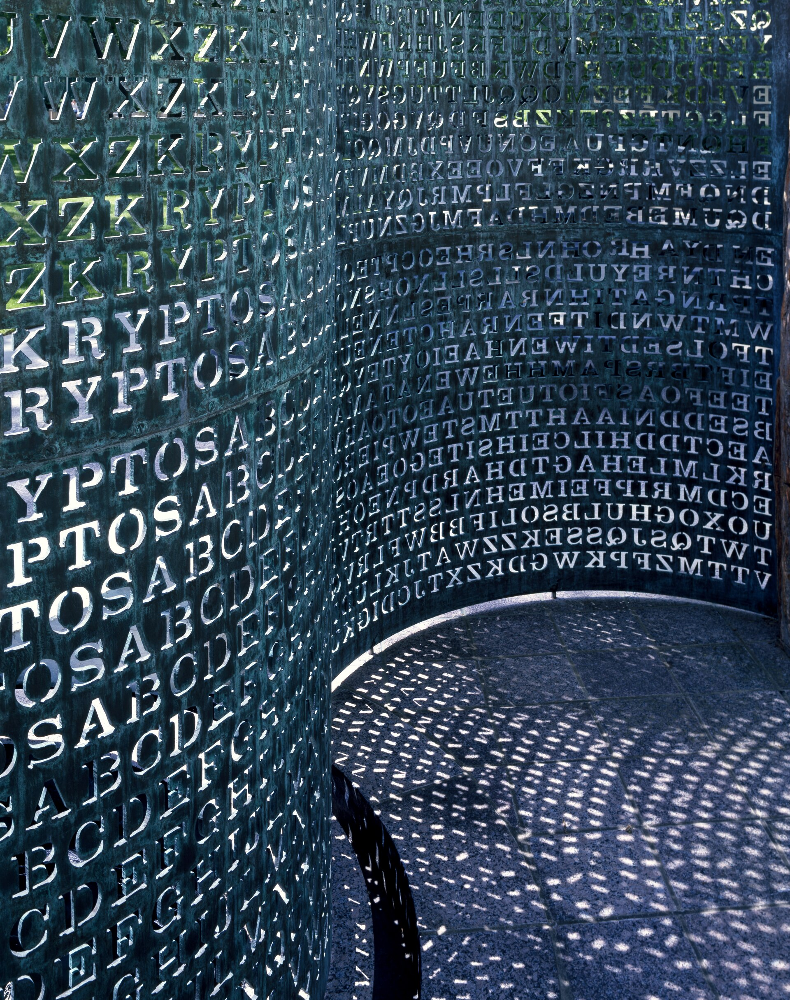
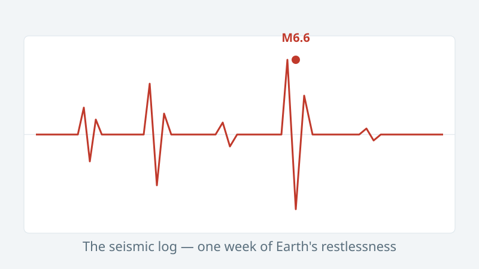
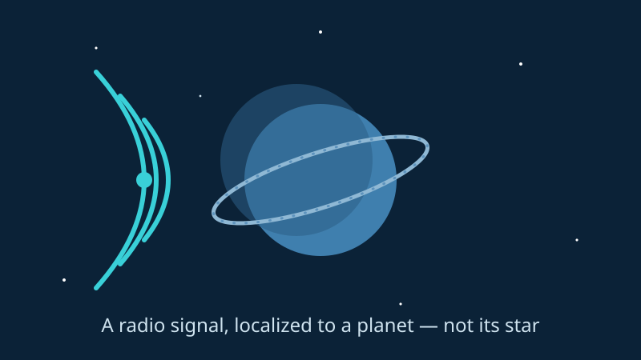

October 04, 2026
The Week's Biggest Quake Almost Nobody Felt
A magnitude 5.9 off Indonesia was the week's largest — but the most-felt quake was a modest 4.2 in Washington state, reported by more than 9,500 people.
READ THE STORY →
October 04, 2026
The Flash Was Only the Beginning: A Hidden X-ray Phase After a Neutron-Star Merger
A gamma-ray flash lasted less than a second. Then Einstein Probe caught something nobody expected: nearly ten minutes of soft X-ray afterglow from a colliding pair of neutron stars.
READ THE STORY →
October 04, 2026
He Was Looking for a Campsite. He Found a 390-Million-Year-Old Impact Crater.
An amateur astronomer spotted a strange circle on satellite maps while planning a camping trip. It turned out to be a 25-kilometer scar from an ancient asteroid strike — the largest impact crater discovered in nearly a decade.
READ THE STORY →
October 03, 2026
The Lab That Never Sleeps: Inside Our 20-Minute Anomaly Watch
Every 20 minutes, our lab queries three live public feeds and writes an anomaly digest. Here's the experiment — the process, the plumbing, and what it's not.
READ THE STORY →
October 03, 2026
Kryptos K4: The Answer Was Found — But Nobody Cracked the Code
For 35 years the CIA courtyard cipher held out. Then two journalists found the plaintext in a Smithsonian archive, an auction paid $962,500, and the cipher method is still a mystery.
READ THE STORY →
October 02, 2026
Weekly Earthquake Watch: The Planet Had a Busy Week
A magnitude 6.6 near New Caledonia led the week's seismic log — roughly 929 quakes of M1.5+ in seven days, straight from the public USGS-tracked feeds. A roundup, not a forecast.
READ THE STORY →
October 02, 2026
First Confirmed Radio Signal Localized to an Exoplanet — Beta Pictoris b
For the first time, astronomers have caught a radio signal coming from a planet outside our solar system — and this time they know it's the planet, not the star.
READ THE STORY →